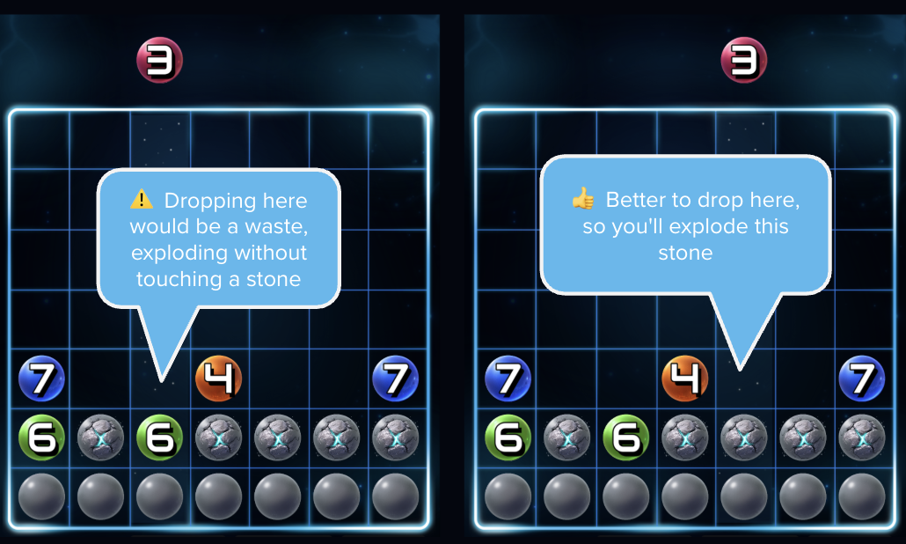
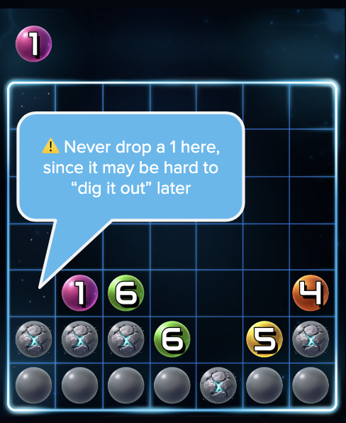
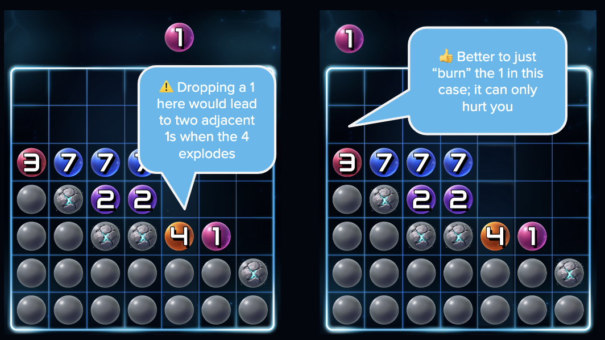
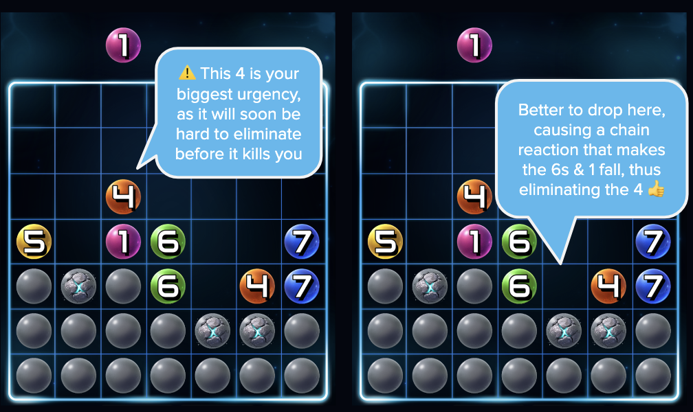
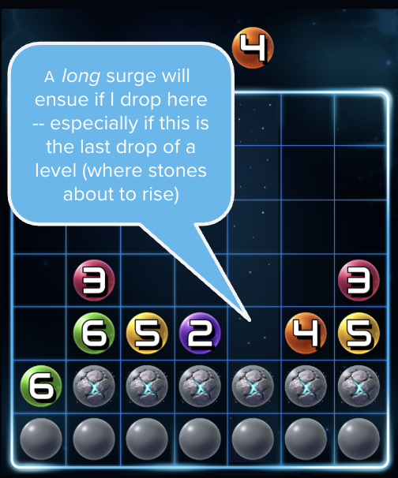
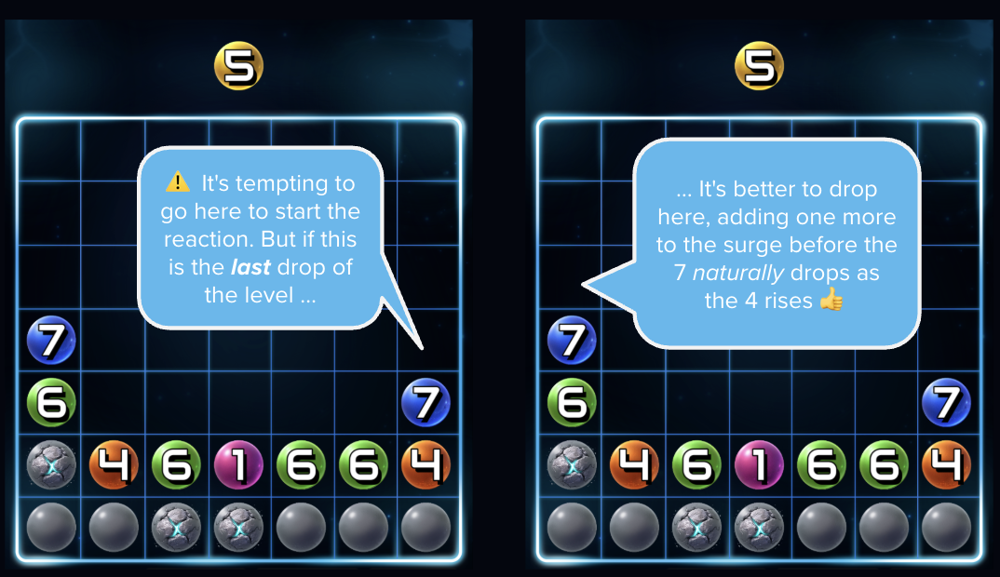

The Golden Rule
The most important thing to remember in Spark7 is to ensure that each
exploding disc is touching the maximum number of stones, and the
minimum number of other numbered discs.
In other words, think of your numbered discs as your ammunition,
and the stones as your targets. You should never "waste" any
ammo by having a disc explode without touching at least one stone.

Of course, there will be many times you'll need to violate this "rule",
as you weigh your move against the considerations in the other tips below.
Just remember that the highest scores will always come from the games
where the highest percentage of disc explosions result in a damaged
stone. It's simple math.
Avoid adjacent 1s

The quickest killer of any player is when several consecutive 1s end
up next to each other (or next to an unknown stone). The only way to
resolve this situation is to "dig out" from underneath the row of 1s,
which becomes exponentially more unlikely the longer your row of 1s.
If you ever have a situation where an existing 1 is at risk of falling
adjacent to another 1 or to a stone, do whatever you can to avoid that
from happening — even if it involves neglecting one of the other tips
on this page.

Avoid orphan 4s & 5s
Another common killer is when a 4 or a 5 ends up on a tall, narrow
column on which it has become too impractical to form a row four or
five discs wide (or to reduce the height to just four or five discs tall).
Over time, you should become adept at noticing that risk materializing
several moves before it happens, and take steps to prevent the
situation before it is too late.

Plan for big "surges"

Remember that scoring in Spark7 is disproportionately impacted by very
long surges, not just by reaching higher levels. Building a huge surge
requires some careful planning (and sometimes a bit of luck as helpful
new stones are uncovered!).
Most successful surges start by planning your disc ordering
horizontally, in sequential order. This sometimes involves
avoiding letting certain discs explode too early while you
build your nice horizontal sequence.
Preparing to trigger a surge may also involve deliberately "stacking"
similar numbers on top of each other — and especially stacking
successively higher or lower numbers in the same vertical column —
until a rising level triggers the first of a chain of explosions.
You will almost certainly get better at creating long surges over time.
Planning long surges in Spark7 can vigorously exercise your working
memory and executive functioning skills.
[See other brain benefits of Spark7.]
Sometimes the best move is no move
It's often tempting to make a series of discs explode immediately, as
soon as a favorable disc loaded from the top presents the opportunity.
But remember that each time the level increases (every five discs),
the number of rows will be pushed up by one, and certain numbered
discs may automatically match their column height — without
you having had to drop a new disc to make that happen.

Knowing when not to cause an explosion because a column is
already naturally "taken care of" is an important skill that
you will build over time.
Quickly adapt your strategy
In a typical game of Spark7, you will often be planning toward a
perfectly epic surge, only to be suddenly stymied by a new urgent
situation — such as a group of adjacent 1s or an impending stale 4.
This may require you to quickly shift your thinking toward the new
priority and stop working toward your previous goal.
Don't be discouraged when this happens! Just forget about the sunk
cost and move on, or you might end up letting a new risk fester for
longer than you can afford to.
Playing Spark7 can be a true test of your resilience, grit, patience,
adaptability, and emotional regulation. Keep pushing yourself!
[See other brain benefits of Spark7.]